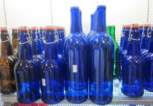
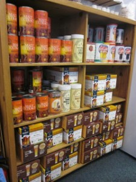

Beer and Wine Making
Requesting an Item
To request an item not currently in stock, fill out the form below and a staff member will get back to you as soon as possible.
Eats carries a large selection of equipment for making beer and wine. We carry fermenting jugs from 1-25 gallons; airlocks; bottling buckets; hydrometers; bottles, cappers, and corkers; and much more. We also carry various chemicals for fermenting and a large selection of yeast for making beer and wine.
We stock and can order a wide variety of grains for making beer from malt syrup to 50-pound bags of grains. We also carry many beer kits that are quick and easy to use. With these kits, you can have 6 gallons of beer ready to ferment in 30 minutes.
We only stock a couple of the numerous wine kits available, so most people order them from us in advance. It usually takes 1 to 2 weeks to get them in from our suppliers.
We also have many books for making beer and wine, liquors, herbal beers, meade, and much more. Come in and check them out, and if you have questions, our staff will be happy to help as best they can.
If you would like to place a special order, you can browse our LD Carlson and BSG Handcraft catalogs (view or download the catalogs by clicking the links below) and then give us a call. We order from two different distributers, each carrying some products the other does not. (Coopers beer ingredient kits are only available through BSG Handcraft while White Labs liquid yeast is only available through LD Carlson Company.)